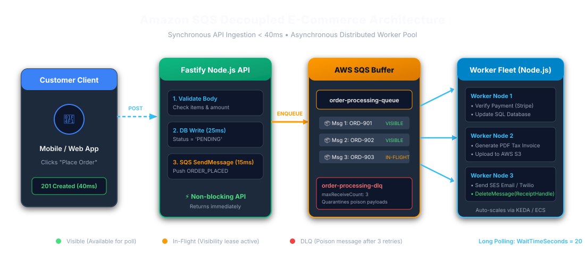
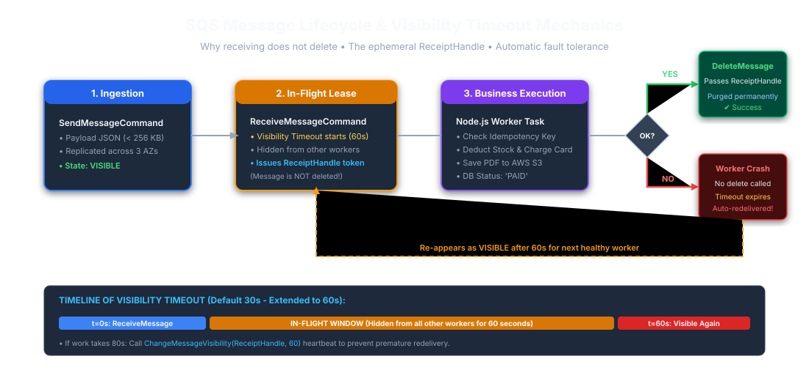
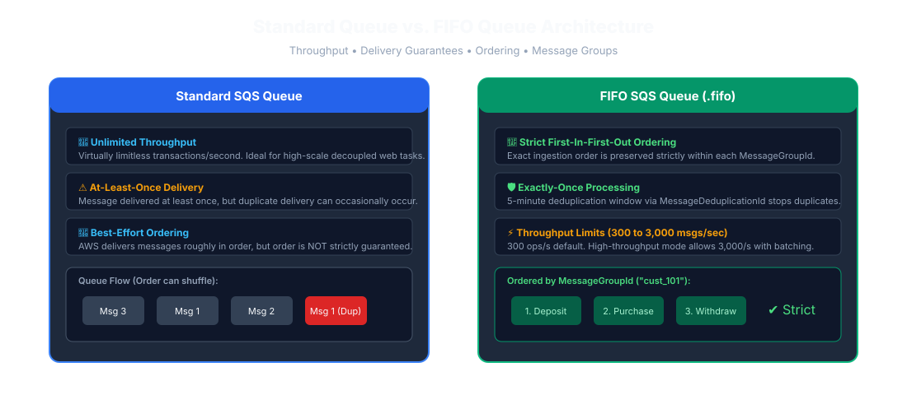
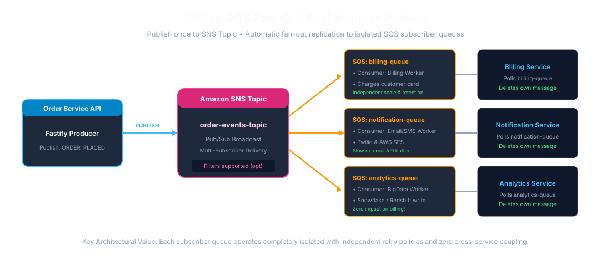
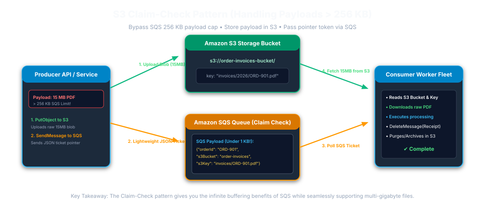
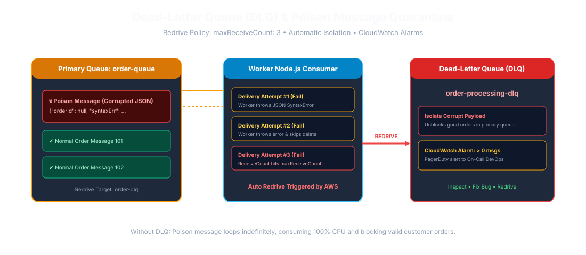

📥 Download Options for Offline Study & Review
Get this entire handbook formatted as a Microsoft Word document (.doc) or print directly to PDF with clean pagination.
01. Executive Overview & The Core Problem SQS Solves
1.1 What is Amazon SQS?
Amazon Simple Queue Service (Amazon SQS) is a fully managed, distributed message queuing service provided by AWS. It enables asynchronous, decoupled communication between microservices, background workers, and distributed systems without requiring services to wait for slow downstream tasks to complete.
1.2 The Real-World Problem: Synchronous E-Commerce Checkout
Consider a high-scale E-Commerce Application (such as Amazon or Flipkart). When a user clicks "Place Order", multiple downstream operations must execute:
- Verify inventory and deduct stock.
- Persist order record in database.
- Verify payment transaction with payment gateway.
- Generate downloadable PDF tax invoice.
- Dispatch order confirmation email and SMS to customer.
- Notify warehouse fulfillment management.
The Synchronous Bottleneck (Without SQS)
[Customer App / Browser]
│ (HTTP POST /api/orders - Place Order)
▼
[Fastify API Server]
├─► 1. Save Order in Database (Takes ~30ms)
├─► 2. Call Third-Party Payment Gateway (Takes ~2,500ms)
├─► 3. Generate PDF Tax Invoice (Takes ~3,500ms)
├─► 4. Connect to SMTP & Send Email Receipt (Takes ~3,000ms)
├─► 5. Send SMS via Twilio / SMS Gateway (Takes ~1,200ms)
▼
[Customer Waits 10+ Seconds on Screen!] ──► Timeouts, high cart abandonment, API thread lock!Consequences of Synchronous Processing:
- High Latency: Customer waits over 10 seconds staring at a loading spinner.
- Cascading Failures: If the third-party invoice generator or email SMTP server is slow or down, the Fastify API threads block, memory climbs, and the entire website crashes for all users.
- No Elastic Buffering: A traffic burst can exceed downstream capacity. A queue absorbs a bounded backlog, so plan for queue quotas, retention, consumer throughput, and backpressure.

जेव्हा एखादा ग्राहक Amazon किंवा Flipkart वरून वस्तू खरेदी करतो (Place Order), तेव्हा बिल तयार करणे, ईमेल पाठवणे, आणि गोदामात मेसेज पाठवणे ही सर्व कामे करावी लागतात. जर ही कामे API ने थेट केली, तर गिऱ्हाईकाला स्क्रीनवर १० ते १५ सेकंद वाट पाहावी लागेल. जर ईमेल सर्व्हर डाऊन असेल तर ऑर्डर कॅन्सल होईल आणि ॲप क्रॅश होईल.
SQS चा फायदा: Fastify API फक्त ऑर्डर डेटाबेसमध्ये नोंदवतो आणि लगेच SQS रांगेत (Queue) मेसेज टाकून अवघ्या ४० मिलीसेकंदात गिऱ्हाईकाला "Order Placed Successfully!" असा मेसेज दाखवतो. नंतर बॅकग्राउंड वर्कर SQS मधून तो मेसेज घेतात, बिल बनवतात आणि ईमेल पाठवतात. यामुळे ॲप कधीही स्लो होत नाही किंवा क्रॅश होत नाही.
02. Core SQS Concepts & Point-Wise Definitions
| SQS Concept | Architectural Role | Technical Definition (English) |
|---|---|---|
| Queue | Storage Container | A highly available, distributed AWS message buffer that holds messages until consumed or expired. Identified by HTTPS URL. |
| Producer | Message Originator |
Application or microservice that creates and publishes messages into SQS (e.g.
Fastify API using SendMessageCommand).
|
| Consumer (Worker) | Task Processor |
Background Node.js service that polls messages using
ReceiveMessageCommand, executes business tasks, and deletes
messages.
|
| Message | Unit of Work | JSON payload (max size 256 KB) containing task metadata, IDs, timestamps, and optional user-defined Message Attributes. |
| Receipt Handle | Ephemeral Delete Token | A temporary unique token returned by SQS only upon receiving a message. Strictly required to delete or update message visibility. |
| Visibility Timeout | Concurrency Lease | Duration (0s to 12h, default 30s) during which SQS temporarily hides a received message from other workers so only the active worker processes it. |
| Message Retention | Storage Lifespan | Maximum duration (1 min to 14 days, default 4 days) an unconsumed message will stay in SQS before being automatically purged by AWS. |
| Delivery Delay | Initial Pause | Intentional delay (0 to 15 minutes) before a freshly sent message becomes visible to consumers. |
| Dead-Letter Queue (DLQ) | Error Quarantine |
Secondary queue configured via Redrive Policy (maxReceiveCount) to
isolate corrupt or repeatedly failing poison messages.
|
1. Queue (रांग): AWS वरील सुरक्षित स्टोरेज कंटेनर जिथे मेसेजेस येऊन
थांबतात.
2. Producer (पाठवणारा): आपला Fastify API जो ऑर्डरचा मेसेज रांगेत
टाकतो.
3. Consumer / Worker (काम करणारा): बॅकग्राउंड Node.js कोड जो मेसेज
उचलतो आणि काम पूर्ण करतो.
4. Message (मेसेज): कामाची माहिती असणारा JSON डेटा (जास्तीत जास्त २५६
KB).
5. Receipt Handle (पावती टोकन): जेव्हा वर्कर मेसेज उचलतो, तेव्हा SQS
त्याला एक खास टोकन देते. मेसेज डिलीट करण्यासाठी हे टोकन लागते.
6. Visibility Timeout (लपवण्याचा वेळ): एक वर्कर काम करत असताना
इतरांना मेसेज दिसू नये म्हणून ठराविक वेळ (उदा. ६० सेकंद) तो लपवला जातो.
7. DLQ (डेड लेटर क्यू): वारंवार फेल होणारे मेसेजेस बाजूला एका वेगळ्या
रांगेत टाकले जातात.
03. SQS Internal Mechanics & Message Lifecycle

Critical Rule: Why Does Receiving a Message NOT Delete It?
In Amazon SQS, receiving a message does not delete it. SQS temporarily hides the message for the duration of the Visibility Timeout.
- If the worker crashes, runs out of memory, or the server loses power during task execution, the message will not be lost.
- Once the visibility timeout expires, SQS automatically makes the message visible again so another healthy worker can pick it up.
-
The worker must explicitly invoke
DeleteMessageCommandusing theReceiptHandleonly after the business logic finishes successfully.
जर SQS ने वर्करने मेसेज वाचताच तो लगेच डिलीट केला असता आणि नेमका त्याच वेळी सर्व्हर
बंद पडला, तर गिऱ्हाईकाची ऑर्डर गायब झाली असती! म्हणून SQS तो मेसेज तात्पुरता लपवून
ठेवतो (Visibility Timeout). जोपर्यंत वर्कर काम यशस्वीरीत्या पूर्ण करून SQS ला
DeleteMessage सांगत नाही, तोपर्यंत तो मेसेज सुरक्षित राहतो. जर वर्कर
क्रॅश झाला तर काही वेळाने तो मेसेज पुन्हा दुसऱ्या वर्करला मिळतो.
04. Standard Queue vs. FIFO Queue

| Dimension | Standard Queue | FIFO Queue (.fifo) |
|---|---|---|
| Throughput | High throughput, subject to service quotas and workload. | Depends on queue configuration, batching, and current AWS quotas. |
| Delivery Guarantee | At-Least-Once Delivery (Duplicates can occur). | Deduplicates producer sends within a 5-minute interval; consumer side effects still require idempotency. |
| Ordering | Best-Effort Ordering (May arrive out of order). |
Strict First-In-First-Out preserved per
MessageGroupId.
|
| Message Group ID | Not supported. |
Mandatory (MessageGroupId). Allows concurrent
processing across distinct groups.
|
| Deduplication ID | Not supported. |
Supported via MessageDeduplicationId or Content-Based
Deduplication.
|
Standard Queue: यह high-throughput queue है, लेकिन संदेश क्रम से बाहर
आ सकते हैं या दोबारा deliver हो सकते हैं।
FIFO Queue: एक ही MessageGroupId के संदेश क्रम से
process होते हैं। पाँच मिनट की deduplication duplicate sends घटाती है, लेकिन consumer
के payment जैसे side effects के लिए idempotency फिर भी आवश्यक है।
05. Amazon SQS vs. Apache Kafka: In-Depth Comparison
| Feature | Amazon SQS | Apache Kafka |
|---|---|---|
| Architecture | Distributed Task Queue | Distributed Append-Only Commit Log |
| Message Consumption | Competing Workers pull messages and delete them after processing. | Consumer groups read event streams and independently track offsets. |
| Message Deletion |
Destructive: Message is permanently deleted upon DeleteMessage.
|
Non-destructive: Messages are saved on disk until topic retention (e.g. 7 days) expires. |
| Replayability | No native replay. Once deleted, it cannot be read again. | Full Replay. Consumers can rewind their offset to re-read past events anytime. |
| Management | 100% Serverless & Managed by AWS. Zero ops. | Requires server management, partition sizing, and cluster monitoring. |
| Best Used For | Background asynchronous jobs, decoupled web API tasks, retriable jobs. | Real-time event streaming, event sourcing, big data analytics, multi-system publish-subscribe. |
SQS म्हणजे 'कामाची यादी (Task Queue)': वर्कर येतो, एक काम उचलतो, काम
पूर्ण करतो आणि ती पावती फाडून टाकतो (Delete). काम संपले की मेसेज नष्ट होतो. SQS
पूर्णपणे AWS सांभाळते.
Kafka म्हणजे 'डायरी किंवा वही (Event Log)': घडलेली प्रत्येक घटना वहीत
कायमची नोंदवून ठेवली जाते. १० वेगवेगळे ॲप्स एकाच वहीतील नोंदी स्वतंत्रपणे वाचू शकतात.
जुने मेसेज हवे तेव्हा पुन्हा वाचता येतात (Replay).
06. Step-by-Step Guide: Setup SQS in Node.js (AWS SDK v3)
Step 1: Install AWS SDK v3
npm init -y
npm install @aws-sdk/client-sqs dotenvStep 2: Configure Environment Variables (.env)
AWS_REGION=ap-south-1
SQS_ORDER_QUEUE_URL=https://sqs.ap-south-1.amazonaws.com/123456789012/order-processing-queue
SQS_ORDER_DLQ_URL=https://sqs.ap-south-1.amazonaws.com/123456789012/order-processing-dlqUse the AWS SDK default credential provider chain (ECS task role, EC2 instance profile, or EKS workload identity) in deployed environments. Keep static credentials out of source control; use an approved local profile for development.
Step 3: Create SQS Client Singleton (config/sqs.js)
import { SQSClient } from "@aws-sdk/client-sqs";
import dotenv from "dotenv";
dotenv.config();
export const sqsClient = new SQSClient({
region: process.env.AWS_REGION || "ap-south-1",
maxAttempts: 3 // Automatic SDK exponential backoff retry
});07. Exhaustive Breakdown: Every SQS Method & Command
| SDK v3 Command | English Technical Explanation | मराठी स्पष्टीकरण आणि उपयोग |
|---|---|---|
new SQSClient({ region, maxAttempts }) |
Instantiates AWS SQS Client object. Configures region and exponential backoff retry. | हा SQS चा मुख्य कन्स्ट्रक्टर आहे. तो Node.js ॲपला AWS च्या SQS सर्व्हरशी जोडतो. |
SendMessageCommand({ QueueUrl, MessageBody, DelaySeconds, MessageAttributes
})
|
Enqueues a single JSON message into SQS. Returns immutable
MessageId.
|
रांगेत नवीन मेसेज पाठवण्यासाठी वापरतात. डेटा JSON स्ट्रिंग स्वरूपात दिला जातो. |
SendMessageBatchCommand({ QueueUrl, Entries: [...] }) |
Sends up to 10 messages in one network round-trip. Slashes AWS API costs significantly. | एकाच फेरीत १० मेसेजेस पाठवण्यासाठी वापरतात, ज्यामुळे पैसे आणि वेळ दोन्ही वाचतात. |
ReceiveMessageCommand({ QueueUrl, MaxNumberOfMessages, WaitTimeSeconds,
VisibilityTimeout })
|
Polls available messages from queue. Enables Long Polling when
WaitTimeSeconds > 0.
|
रांगेतून मेसेज वाचण्यासाठी वापरतात. WaitTimeSeconds: 20 दिल्यास ते
मेसेज येईपर्यंत २० सेकंद थांबते (Long Polling).
|
DeleteMessageCommand({ QueueUrl, ReceiptHandle }) |
Permanently deletes processed message from SQS using its ephemeral
ReceiptHandle.
|
काम पूर्ण झाल्यावर SQS मधून तो मेसेज कायमचा काढून टाकण्यासाठी वापरतात. |
DeleteMessageBatchCommand({ QueueUrl, Entries: [...] }) |
Deletes up to 10 processed messages in a single batch request. | एकाच वेळी १० मेसेजेस डिलीट करण्यासाठी वापरतात. |
ChangeMessageVisibilityCommand({ QueueUrl, ReceiptHandle, VisibilityTimeout
})
|
Extends invisibility window for long-running worker tasks. | काम संपायला जास्त वेळ लागत असल्यास लपवण्याचा वेळ (Visibility Timeout) वाढवण्यासाठी वापरतात. |
GetQueueAttributesCommand({ QueueUrl, AttributeNames: ['All'] })
|
Retrieves queue metadata, backlog counts, and DLQ redrive attributes. | रांगेत किती मेसेजेस बाकी आहेत आणि किती प्रोसेस होत आहेत ते तपासण्यासाठी वापरतात. |
PurgeQueueCommand({ QueueUrl }) |
Deletes all messages in SQS queue without deleting queue itself. | रांगेतील सर्व मेसेजेस एका झटक्यात साफ (रिकामे) करण्यासाठी वापरतात. |
08. Exhaustive Breakdown: Every SQS Property & Configuration Attribute
| Property Name | Data Type | Technical Purpose (English) | मराठी सविस्तर स्पष्टीकरण आणि उपयोग |
|---|---|---|---|
QueueUrl |
String | Full HTTPS endpoint URL identifying target AWS queue. | ज्या रांगेत मेसेज पाठवायचा किंवा वाचायचा आहे तिचा HTTPS वेब पत्ता. |
MessageBody |
String | The actual task payload data in stringified JSON format (max 256 KB). | मेसेजमधील मुख्य मजकूर किंवा डेटा (JSON स्वरूपात). |
ReceiptHandle |
String | Ephemeral identifier generated on every receive; strictly required to delete. | मेसेज वाचल्यावर मिळणारे पावती टोकन. मेसेज डिलीट करण्यासाठी हेच टोकन लागते. |
MessageId |
String | Immutable system UUID assigned by SQS upon ingestion. | मेसेज SQS मध्ये आल्यावर SQS ने दिलेला कायमस्वरूपी युनिक नंबर. |
WaitTimeSeconds |
Integer (0–20) | Duration for Long Polling. SQS holds connection open until message arrives. | लॉंग पोलिंगचा वेळ (० ते २० सेकंद). रांगेत मेसेज येईपर्यंत थांबण्याची सुविधा. |
VisibilityTimeout |
Integer (0–43200s) | Duration the message stays hidden from other workers while in-flight. | मेसेज उचलल्यावर इतर वर्कर्सपासून तो किती सेकंद लपवून ठेवायचा हा वेळ (डीफॉल्ट ३० सेकंद). |
MaxNumberOfMessages |
Integer (1–10) |
Maximum number of messages retrieved in single ReceiveMessage call.
|
एका वेळी जास्तीत जास्त किती मेसेजेस उचलायचे (१ ते १० पर्यंत). |
DelaySeconds |
Integer (0–900s) | Delivery delay applied before becoming visible (0–15 mins). | मेसेज पाठवल्यावर सुरुवातीला किती सेकंद थांबवून ठेवायचे तो वेळ (० ते १५ मिनिटे). |
MessageGroupId |
String | Mandatory for FIFO. Preserves strict sequential order within group. | FIFO रांगेसाठी आवश्यक. ज्या मेसेजचा ग्रुप आयडी सारखा असेल ते क्रमाने चालतात. |
MessageDeduplicationId |
String | Token used by FIFO to prevent duplicate sends within 5-minute window. | FIFO मध्ये ५ मिनिटांच्या आत आलेला डुप्लिकेट मेसेज थांबवणारा टोकन. |
ApproximateReceiveCount |
String (Int) | System attribute counting how many times message has been delivered to workers. | हा मेसेज आतापर्यंत किती वेळा वर्करने वाचण्याचा प्रयत्न केला त्याची संख्या. |
09. Real-World Architecture: E-Commerce Order Fulfillment System
The E-Commerce Pipeline Workflow:
- User Checkout: Customer clicks "Place Order" on mobile app / website.
-
Fastify API (Producer):
- Validates cart items and customer profile.
-
Saves order record with status
"PENDING"in PostgreSQL database. -
Enqueues
ORDER_PLACEDmessage intoorder-processing-queue. -
Returns
HTTP 201 Createdafter the required durable writes succeed; latency depends on database, queue, and network performance.
- SQS Buffering: SQS retains messages safely across AWS availability zones.
-
Order Worker Daemon (Consumer):
- Long-polls SQS (
WaitTimeSeconds: 20). - Verifies idempotency key to prevent double charging.
-
Performs payment verification, generates PDF invoice, and updates database status
to
"PAID". - Calls
DeleteMessageCommandusingReceiptHandle.
- Long-polls SQS (
- Dead-Letter Queue (DLQ): SQS moves a message after the configured receive count is exceeded without deletion; it cannot directly observe application failure. Choose the count for the workload and inspect messages before redrive.
10. End-to-End Production Code: Fastify Producer & Long-Polling Worker Consumer
10.1 Fastify API Order Producer Route (routes/order.js)
import { SendMessageCommand } from "@aws-sdk/client-sqs";
import { sqsClient } from "../config/sqs.js";
export async function orderRoutes(fastify, options) {
fastify.post("/api/orders", async (request, reply) => {
const { customerId, items, totalAmount } = request.body;
if (!customerId || !totalAmount) {
return reply.status(400).send({ error: "Missing required order fields" });
}
const orderNumber = `ORD-${Date.now()}`;
const idempotencyKey = `ORDER_IDEMP_${orderNumber}`;
// 1. Prepare SQS message payload
const orderPayload = {
orderNumber,
customerId,
items,
totalAmount,
idempotencyKey,
createdAt: new Date().toISOString()
};
// 2. Publish task to Amazon SQS
const command = new SendMessageCommand({
QueueUrl: process.env.SQS_ORDER_QUEUE_URL,
MessageBody: JSON.stringify(orderPayload),
MessageAttributes: {
EventType: { DataType: "String", StringValue: "ORDER_PLACED" },
CustomerId: { DataType: "String", StringValue: String(customerId) }
}
});
await sqsClient.send(command);
// 3. Return after required durable writes succeed; latency depends on the workload
return reply.status(201).send({
message: "Order placed successfully! Processing in background.",
orderNumber,
status: "PENDING"
});
});
}Production consistency note: This snippet focuses on publishing and omits the database write for brevity. Use a transactional outbox and idempotent publisher/consumer when the order record and SQS message must not diverge.
10.2 Background Worker Consumer with Graceful Shutdown
(workers/orderWorker.js)
import { ReceiveMessageCommand, DeleteMessageCommand } from "@aws-sdk/client-sqs";
import { sqsClient } from "../config/sqs.js";
const queueUrl = process.env.SQS_ORDER_QUEUE_URL;
let isShuttingDown = false;
async function fulfillOrder(order) {
console.log(`[Worker] Fulfilling order ${order.orderNumber}...`);
// Simulate payment verification, PDF invoice generation & email receipt
await new Promise((resolve) => setTimeout(resolve, 150));
console.log(`[Worker] Order ${order.orderNumber} successfully fulfilled!`);
}
async function startWorker() {
console.log("🚀 SQS Order Worker listening on queue...");
while (!isShuttingDown) {
try {
const response = await sqsClient.send(
new ReceiveMessageCommand({
QueueUrl: queueUrl,
MaxNumberOfMessages: 1,
WaitTimeSeconds: 20, // Long Polling: 20s hold
VisibilityTimeout: 60 // Set above expected processing time; extend for long jobs
})
);
const messages = response.Messages ?? [];
for (const message of messages) {
try {
const order = JSON.parse(message.Body);
await fulfillOrder(order);
// Delete from SQS only after fulfillment succeeds!
await sqsClient.send(
new DeleteMessageCommand({
QueueUrl: queueUrl,
ReceiptHandle: message.ReceiptHandle
})
);
console.log(`[Worker] SQS Message deleted: ${message.MessageId}`);
} catch (taskErr) {
console.error(`[Worker] Error on message ${message.MessageId}:`, taskErr.message);
// Do NOT delete message; allow SQS to retry after visibility timeout
}
}
} catch (pollErr) {
console.error("[Worker] Network polling error:", pollErr.message);
await new Promise((res) => setTimeout(res, 2000));
}
}
console.log("Worker daemon stopped cleanly.");
}
process.on("SIGTERM", () => { isShuttingDown = true; });
process.on("SIGINT", () => { isShuttingDown = true; });
startWorker();11. Distributed Duplication, Business Idempotency & Outbox Pattern
Why Duplicates Occur in Standard SQS
Amazon SQS Standard Queues guarantee At-Least-Once Delivery. A duplicate delivery happens if:
- Worker receives order message.
- Worker finishes fulfillment (payment verified, invoice saved).
-
Network connection blips before Worker's
DeleteMessagecall reaches SQS. - Visibility timeout expires (60s). SQS redelivers the exact same message to another worker!
The Solution: Database Idempotency
Ensure every message includes a deterministic idempotencyKey (e.g.
ORDER_IDEMP_ORD-12345). In your database, store this key in a table with a
UNIQUE constraint index. If a duplicate message arrives, the database
rejects duplicate insert, preventing double billing.
समजा वर्करने ग्राहकाचे पैसे कापले, पण SQS ला 'Delete' मेसेज पाठवण्याआधीच इंटरनेट बंद झाले. तर SQS ला वाटेल की काम झाले नाही, आणि SQS तोच मेसेज पुन्हा पाठवेल!
उपाय: आपण डेटाबेसमध्ये idempotencyKey युनिक (Unique)
ठेवतो. जर तोच मेसेज पुन्हा आला, तर डेटाबेस सांगतो की "ही ऑर्डर आधीच झाली आहे!" आणि
वर्कर पैसे पुन्हा न कापता शांतपणे SQS चा मेसेज डिलीट करतो. याला
Idempotency म्हणतात.
12. Advanced Enterprise SQS Patterns (Senior Interview Hot Topics)


12.1 The SNS + SQS Fan-Out Pattern
The Problem: SQS is a point-to-point queue. If 3 different services
(Billing, Notification, Analytics) all need a copy of ORDER_PLACED, you
cannot have them read the same queue because the first worker that deletes it consumes
it exclusively.
The Solution: Publish once to an Amazon SNS Topic. Three separate SQS queues subscribe to that topic. SNS replicates the event to all 3 queues concurrently.
12.2 Handling Payloads > 256 KB: The S3 Claim-Check Pattern
SQS enforces a hard 256 KB ceiling. When queueing large files (e.g., 10 MB invoice PDF or video):
- Producer uploads the large file to an Amazon S3 Bucket.
- Producer puts lightweight JSON into SQS with the S3 bucket & object key ("claim check ticket").
- Consumer retrieves SQS message, downloads full payload from S3, processes it, and deletes both SQS message and S3 file.
12.3 Consumer Autoscaling Mechanics (CloudWatch Backlog & KEDA)
Scale based on Backlog per Worker:
Backlog Per Worker = ApproximateNumberOfMessagesVisible / Running Worker Task Count
On Kubernetes (EKS), use KEDA with aws-sqs trigger to
scale worker pods from 1 to 50 within seconds.
1. SNS to SQS Fan-Out: एकाच ऑर्डरची माहिती बिलिंग, ईमेल आणि
ॲनालिटिक्स तिघांना हवी असेल तर आधी SNS मध्ये मेसेज पाठवला जातो आणि SNS आपोआप तिन्ही
SQS रांगेत वाटून देतो.
2. S3 Claim-Check: २५६ KB पेक्षा मोठी फाईल S3 मध्ये ठेवून SQS मध्ये
फक्त लिंक पाठवली जाते.
3. ऑटो-स्केलिंग: रांगेत किती मेसेजेस पेंडिंग आहेत ते पाहून KEDA किंवा
ECS आपोआप वर्कर सर्व्हर्स वाढवते.
13. Poison Messages, Dead-Letter Queues (DLQ) & CloudWatch Monitoring

A poison message repeatedly fails processing. SQS moves a message after
the configured receive count is reached without deletion; it cannot directly observe
application failure. Choose maxReceiveCount for the workload and inspect
messages before redrive.
Critical CloudWatch Metrics:
-
ApproximateAgeOfOldestMessage: Shows how long the oldest unconsumed task has been waiting. (Top SLA latency metric). -
ApproximateNumberOfMessagesVisible: Queue backlog size. Used for horizontal autoscaling. -
DLQ ApproximateNumberOfMessagesVisible: Must be 0. If > 0, triggers an urgent engineering alert!
14. Master Interview Questions & Answers (3–5 Years Experience)
Complete set of all 32 Mid-to-Senior interview questions with precise technical English responses and comprehensive Marathi explanations.
English Answer: Amazon SQS is a fully managed message queue that
decouples microservices. In E-Commerce, when an order is placed, Fastify saves the
order as PENDING and enqueues a message to SQS, immediately returning
HTTP 201 to the customer. Background workers asynchronously process payments,
invoices, and emails without blocking customer checkout.
Amazon SQS ही AWS ची मेसेज रांग सेवा आहे. ई-कॉमर्समध्ये ऑर्डर केल्यावर Fastify API तात्काळ रिस्पॉन्स देऊन मेसेज SQS मध्ये टाकतो आणि बॅकग्राउंड वर्कर बिल बनवणे आणि ईमेल पाठवण्याचे काम करतात, ज्यामुळे सर्वर कधीही स्लो होत नाही.
English Answer: SQS follows a Producer–Queue–Consumer architecture:
1) Producer calls SendMessage; 2) SQS replicates across AZs; 3)
Consumer calls ReceiveMessage with Long Polling; 4) Message hidden
during Visibility Timeout; 5) Consumer processes task; 6) Consumer calls
DeleteMessage with ReceiptHandle.
Producer मेसेज पाठवतो, SQS तो सुरक्षित रांगेत ठेवतो. वर्करने मेसेज घेतल्यावर तो तात्पुरता लपवला जातो. काम पूर्ण झाल्यावरच वर्कर पावती टोकन (ReceiptHandle) देऊन तो मेसेज कायमचा डिलीट करतो.
English Answer: SQS is a managed Task Queue where workers pull and delete tasks after completion. Kafka is an append-only commit log where consumer groups track offsets. SQS deletes messages upon acknowledgment; Kafka retains records for days, enabling full replayability.
SQS हे काम झाल्यावर मेसेज डिलीट करते (Task Queue). Kafka मेसेज वहीसारखा कायमस्वरूपी सेव्ह ठेवतो (Event Log) जेणेकरून जुने मेसेज पुन्हा वाचता येतात (Replay).
English Answer: Standard queues scale to high throughput, subject
to service quotas, with at-least-once delivery and best-effort ordering. FIFO queues
preserve strict ordering per MessageGroupId and deduplicate producer
sends within a five-minute interval. Throughput depends on queue configuration and
current AWS quotas.
Standard queue में संदेश क्रम से बाहर आ सकते हैं और दोबारा deliver हो सकते हैं।
FIFO queue एक ही MessageGroupId के संदेश क्रम से process करती है;
deduplication duplicate sends घटाती है, पर consumer side effects को exactly-once
नहीं बनाती।
English Answer: Guarantees messages are delivered at least once.
Duplicates happen if a worker commits a task, but crashes before calling
DeleteMessage. SQS visibility timeout expires and redelivers the
message. Handled via database idempotency.
प्रत्येक मेसेज किमान एकदा नक्की पोहोचणार. जर वर्करने काम केले पण मेसेज डिलीट करण्याआधी इंटरनेट गेले, तर SQS तोच मेसेज पुन्हा पाठवतो. म्हणून कोडमध्ये Idempotency असणे आवश्यक आहे.
English Answer: The window (0s–12h; default 30s) during which SQS hides an in-flight message so other workers cannot receive it.
वर्करने मेसेज उचलल्यावर दुसऱ्या कोणाला दिसू नये म्हणून तो जितका वेळ लपवून ठेवला जातो त्याला Visibility Timeout म्हणतात (डीफॉल्ट ३० सेकंद).
English Answer: If not deleted before the visibility timeout expires, a message can become visible for redelivery. Standard queues are at-least-once; consumers must be idempotent, and retention/DLQ settings still matter.
वर्कर क्रॅश झाला तरी काही अडचण येत नाही. वेळ संपल्यावर तो मेसेज पुन्हा रांगेत दिसतो आणि दुसरा वर्कर काम पूर्ण करतो.
English Answer: Setting WaitTimeSeconds: 20 enables
long polling and can reduce empty receives and worker wake-ups. Savings depend on
workload; it does not eliminate empty responses in every case.
रांगेत मेसेज येईपर्यंत २० सेकंद थांबून राहणे याला Long Polling म्हणतात. यामुळे रिकाम्या फेऱ्या टळतात आणि AWS चे बिल ८०% वाचते.
English Answer: An isolated queue for messages that fail repeatedly
beyond maxReceiveCount, stopping poison messages from burning CPU.
३ वेळा फेल होणारे चुकीचे मेसेजेस बाजूला काढून ठेवणारी रांग म्हणजे DLQ, जेणेकरून मुख्य सिस्टीम अडकून पडत नाही.
English Answer: Threshold of failed receive attempts before SQS automatically transfers the message to the DLQ.
मेसेज किती वेळा अयशस्वी झाल्यावर DLQ मध्ये पाठवायचा ती संख्या (उदा. ३ वेळा).
English Answer: Retry is for temporary transient failures; DLQ isolates permanent poison payloads.
Retry तात्पुरत्या अडचणींसाठी (उदा. नेटवर्क स्लो), DLQ कायमच्या चुकीच्या डेटासाठी असते.
English Answer: Retention is total storage lifespan (14 days max). Visibility timeout is the in-flight processing window (30s default).
Retention म्हणजे मेसेज SQS मध्ये किती दिवस साठवून राहील (१४ दिवस). Visibility म्हणजे वर्करने मेसेज घेतल्यावर तो किती वेळ लपवला जाईल (३० सेकंद).
English Answer: SQS generates a new ReceiptHandle on every receive. It proves the caller holds the active processing lease, preventing race conditions.
प्रत्येक वेळी मेसेज वाचताना SQS नवीन पावती (ReceiptHandle) देते, त्यावरून सिद्ध होते की हाच वर्कर सध्या काम करत आहे.
English Answer: Use @aws-sdk/client-sqs: initialize
SQSClient, send with SendMessageCommand, poll with
ReceiveMessageCommand, and delete with
DeleteMessageCommand.
AWS SDK v3 चे पॅकेज वापरून क्लायंट बनवला जातो, SendMessage ने पाठवला जातो आणि Delete ने डिलीट केला जातो.
English Answer: Wrap in try/catch. On transient error,
do NOT delete message; allow visibility timeout to expire for auto-retry.
तात्पुरती एरर आल्यास मेसेज डिलीट करू नये, SQS आपोआप थोड्या वेळाने पुन्हा प्रयत्न करेल.
English Answer: Catch SIGTERM, set shutdown flag to
stop polling, await in-flight tasks, then exit cleanly.
सर्व्हर बंद होताना चालू असलेले काम पूर्ण होऊ देणे आणि नवीन मेसेज घेणे थांबवून सुरक्षित बाहेर पडणे.
English Answer: Fetch at most 10 messages per batch and use
concurrency limiters (p-limit) to prevent downstream resource
exhaustion.
डेटाबेस क्रॅश होऊ नये म्हणून एकाच वेळी मर्यादित कामे (उदा. ५ ते १०) केली जातात.
English Answer: Enforces strict sequence for messages with the same group ID, while allowing parallel processing across different groups.
FIFO मध्ये सारख्या ग्रुपचे मेसेजेस क्रमाने चालतात, पण वेगवेगळ्या ग्रुपचे मेसेजेस एकाच वेळी पॅरलल चालतात.
English Answer: Unique token suppressing duplicate sends within a 5-minute deduplication window.
FIFO मध्ये ५ मिनिटांच्या आत आलेला डुप्लिकेट मेसेज थांबवणारा टोकन.
English Answer: Ensuring repeated execution produces the same business outcome. Essential because SQS standard queues deliver at least once.
एकाच मेसेजवर कितीही वेळा प्रक्रिया झाली तरी दुबार पैसे न कापणे किंवा दुबार ऑर्डर न होणे म्हणजे Idempotency.
English Answer: Fastify creates PENDING order and enqueues to SQS. Horizontally scaled workers consume with long polling and idempotent writes.
फ्लॅश सेलमध्ये सर्व ऑर्डर्स SQS मध्ये साठवून वर्कर हळूहळू सुरक्षितपणे डेटाबेसमध्ये सेव्ह करतात.
English Answer:
ApproximateAgeOfOldestMessage (latency),
ApproximateNumberOfMessagesVisible (backlog), and DLQ visible messages.
सर्वात जुना मेसेज किती वेळ अडकला आहे आणि रांगेत किती मेसेजेस बाकी आहेत हे तपासणे.
English Answer: Use
ChangeMessageVisibilityCommand periodically as a heartbeat to extend
the visibility window.
काम संपायला वेळ लागत असेल तर SQS कडून अजून वेळ मागून घेणे (ChangeMessageVisibility).
English Answer: Enforce UNIQUE constraint on
idempotencyKey in the database. Catch duplicate collision and discard
safely.
डेटाबेसमध्ये युनिक की वापरणे जेणेकरून डुप्लिकेट मेसेज आला तरी डेटाबेस एरर देऊन तो थांबवतो.
English Answer: A corrupt payload causing perpetual worker crashes. Mitigated via schema validation and Dead-Letter Queue.
खराब डेटा असलेला मेसेज जो प्रत्येक वेळी सिस्टीम क्रॅश करतो. याला DLQ मध्ये टाकले जाते.
English Answer: Delay postpones initial delivery when sent. Visibility timeout hides a message after it has been received.
Delay सुरुवातीला मेसेज थांबवून ठेवतो. Visibility Timeout मेसेज वर्करने घेतल्यावर इतरांपासून लपवतो.
English Answer: Use Transactional Outbox Pattern: save order and outbox record in same database transaction; background daemon publishes to SQS.
एकाच ट्रान्झॅक्शनमध्ये ऑर्डर आणि आउटबॉक्स टेबल सेव्ह करणे, जेणेकरून डेटा कधीही गहाळ होत नाही.
English Answer: Place DeleteMessageCommand immediately
after resolved business transaction. If transaction throws, execution jumps to
catch, leaving message in SQS for redelivery.
डेटाबेस ट्रान्झॅक्शन यशस्वी झाल्यावरच शेवटी DeleteMessage चालवणे.
English Answer: SQS poller → payload validation → idempotency check → payment verification & invoice generation → status update → SQS deletion.
मेसेज घेणे, डेटा तपासणे, पेमेंट तपासणे, बिल बनवणे, आणि शेवटी SQS मेसेज डिलीट करणे.
English Answer: IAM Least Privilege, IAM Roles for ECS/K8s, KMS Server-Side Encryption, enforce HTTPS, and VPC Endpoints.
पासवर्ड न ठेवता IAM Roles वापरणे, डेटा एन्क्रिप्शन चालू ठेवणे आणि प्रायव्हेट नेटवर्क वापरणे.
English Answer: Check oldest message age, inspect database CPU and connection saturation, scale worker pods horizontally, and verify batch processing.
डेटाबेसवर लोड आलाय का तपासणे, वर्कर क्रॅश होत नाहीये ना पाहणे, आणि नवीन वर्कर सर्व्हर वाढवणे.
English Answer: Unit test with
aws-sdk-client-mock asserting DeleteMessage is only called on success.
Integration test with LocalStack.
युनिट टेस्टिंगसाठी `aws-sdk-client-mock` आणि लोकल टेस्टिंगसाठी Docker मध्ये LocalStack वापरणे.
15. Quick Revision Cheat Sheet
| Concept / Mechanism | Production Gold Standard Rule |
|---|---|
| Standard SQS | High throughput subject to service quotas; at-least-once delivery and best-effort ordering. |
| FIFO SQS | Strict order per MessageGroupId, 5-min deduplication. |
| Long Polling |
Consider WaitTimeSeconds: 20 to reduce empty receives; measure
cost and latency for the workload.
|
| ReceiptHandle | Required to delete. Never delete using MessageId. |
| Fan-Out | Use SNS Topic fronting SQS Queues for 1-to-many publish-subscribe. |
| Large Payloads (> 256 KB) | Use S3 Claim-Check Pattern. |
| Autoscaling |
Scale workers on Backlog per Task (VisibleMessages / WorkerCount)
via KEDA / ECS.
|
| Idempotency | Enforce at the business/database layer with unique keys. |
| DLQ |
Configure maxReceiveCount for the workload; SQS counts receives
before redrive, not application failures.
|
हिंदी Interview Perspective
- Standard SQS at-least-once है। FIFO की पाँच-मिनट deduplication consumer side effects को exactly-once नहीं बनाती; business idempotency आवश्यक है।
- Visibility timeout को expected processing duration के अनुरूप रखें; long jobs में उसे extend करें और duplicates के लिए तैयार रहें।
- Database write और queue publish के dual-write risk का उत्तर transactional outbox तथा idempotent consumer से दें।
- DLQ receive count application failure नहीं पहचानता। Oldest-message age, backlog और DLQ alarms monitor करें।